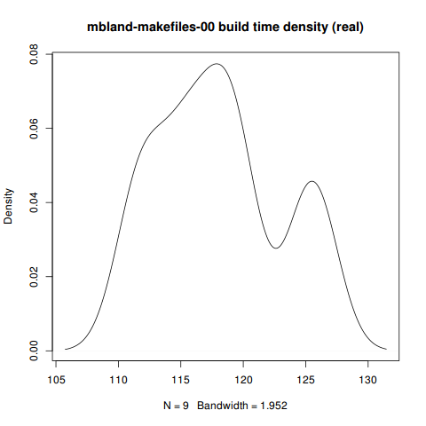
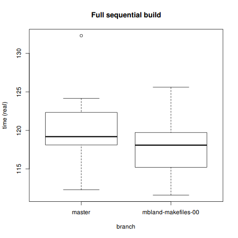
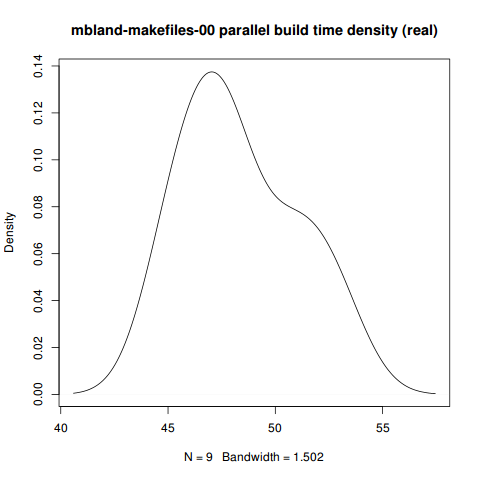
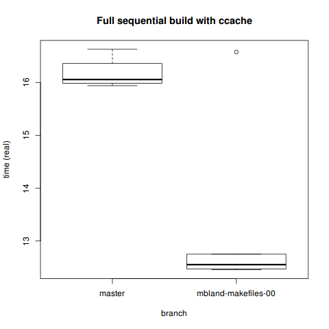
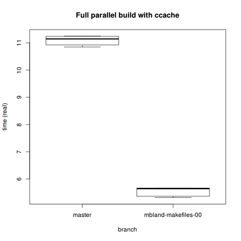

Benchmarking Mike Bland's OpenSSL Makefiles
Contents
Mike Bland has been hard at work refactoring the build system for OpenSSL.
I wasn’t involved in developing these changes, but I do care about OpenSSL and the way the decision process happens there.
I care about making sure its developers get the best bang for their buck
out of their time, so that they can focus on the important issues.
As my small contribution to this effort, I ran benchmarks and did statistical analysis of Mike’s builds to see if they really are faster than the old ones — and if so, to see just where these speedups manifest.
The results are quite good.
Motivation
The main reference point in the literature for Mike’s refactoring is the 1997 paper Recursive Make Considered Harmful. That article makes all sorts of good points, and offers some solutions as well.
But to summarize it, the two problems with recursive Make we’re concerned with:
- The inaccuracy of the dependencies, or the simple lack of dependencies, can result in a product which is incapable of building cleanly, requiring the build process to be carefully watched by a human.
- Related to the above, some projects are incapable of taking advantage of various
parallel makeimpementations, because the build does patently silly things.
I won’t go further into the details of why these refactors are helpful here.
You can read about that in Mike’s writeup,
[openssl-dev],
or the [openssl-testing] thread if you’re interested. What I’m going to cover is the benchmarks that I ran and which of my results are statistically significant.
Why? Because I don’t like to see speed statistics without the data analysis to back them up. When someone comes around saying hey, this way of doing it is faster
I want to see some sort of proof, repeated trials, and a significance test of some sort.
R analysis
You can find the full dataset created from my benchmarking in one easy-to-use CSV file.
> ssl <- read.csv('all_builds.csv')
> head(ssl)
branch shortref command real user sys ccache
1 master a46149c make 112.30 99.15 8.07 FALSE
2 master a46149c make 118.95 105.31 8.58 FALSE
3 master a46149c make 118.12 104.59 8.52 FALSE
4 master a46149c make 117.28 103.85 8.22 FALSE
5 master a46149c make 124.16 109.49 9.21 FALSE
6 master a46149c make 121.17 106.99 8.71 FALSEI ran builds with ccache and without it, so we’ll start by subsetting the data based on that.
> ccache <- ssl[which(ssl$ccache),]
> normal <- ssl[which(!ssl$ccache),]Then we can subset the data into the different types of builds:
> fullseq <- normal[which(normal$command == 'make'),]
> fullpar <- normal[which(normal$command == 'make -j4'),]
> fulltest <- normal[which(normal$command ==
+ 'touch ssl/d1_both.c && /usr/bin/time make'),]
> fullseqcc <- ccache[which(ccache$command == 'make'),]
> fullparcc <- ccache[which(ccache$command == 'make -j4'),]
> fulltestcc <- ccache[which(ccache$command == 'make test'),]Full sequential build
These builds are just the regular make clean && /usr/bin/time -p make. Since the single-makefile approach generally favors parallel more than sequential builds, it’s not surprising that we don’t see much improvement here.
master
real user sys
Min. :112.3 Min. : 99.15 Min. :8.070
1st Qu.:118.1 1st Qu.:104.15 1st Qu.:8.520
Median :119.2 Median :105.31 Median :8.710
Mean :120.6 Mean :106.50 Mean :8.784
3rd Qu.:122.3 3rd Qu.:107.80 3rd Qu.:9.210
Max. :132.3 Max. :117.17 Max. :9.410> plot(density(fullseq[which(fullseq$branch=='master'),]$real),
main='master build time density (real)')mbland-makefiles-00
real user sys
Min. :111.6 Min. : 98.66 Min. :7.880
1st Qu.:115.2 1st Qu.:101.97 1st Qu.:8.160
Median :118.1 Median :104.52 Median :8.410
Mean :118.0 Mean :104.42 Mean :8.482
3rd Qu.:119.7 3rd Qu.:105.79 3rd Qu.:8.870
Max. :125.6 Max. :111.12 Max. :9.060 > plot(density(
+ fullseq[which(fullseq$branch=='mbland-makefiles-00'),]$real),
+ main='mbland-makefiles-00 build time density (real)')
Comparison
> boxplot(fullseq[which(fullseq$branch=='master'),]$real,
+ fullseq[which(fullseq$branch=='mbland-makefiles-00'),]$real,
+ ylab='time (real)', xlab='branch',
+ names=c('master', 'mbland-makefiles-00'),
+ main='Full sequential build')
> t.test(real ~ branch, data=fullseq)
Welch Two Sample t-test
data: real by branch
t = 1.0478, df = 15.906, p-value = 0.3104
alternative hypothesis: true difference in means is not equal to 0
95 percent confidence interval:
-2.688901 7.940012
sample estimates:
mean in group master mean in group mbland-makefiles-00
120.6433 118.0178 Not surprisingly, the T-test is inconclusive. If you don’t have a multicore machine, odds are you won’t see a significant speedup from these patches.
Full parallel build
Parallel builds are where you expect a single-makefile build system to really shine. When running these, it certainly felt faster.
master
real user sys
Min. :79.24 Min. :105.8 Min. :8.190
1st Qu.:80.10 1st Qu.:106.6 1st Qu.:8.690
Median :80.92 Median :107.2 Median :8.730
Mean :81.24 Mean :107.8 Mean :8.814
3rd Qu.:82.67 3rd Qu.:109.4 3rd Qu.:9.070
Max. :83.66 Max. :110.6 Max. :9.190> plot(density(fullpar[which(fullpar$branch=='master'),]$real),
+ main='master parallel build time density (real)')mbland-makefiles-00
real user sys
Min. :45.10 Min. :147.8 Min. :11.08
1st Qu.:46.90 1st Qu.:151.6 1st Qu.:11.44
Median :47.68 Median :154.9 Median :11.70
Mean :48.36 Mean :157.6 Mean :11.75
3rd Qu.:50.37 3rd Qu.:166.1 3rd Qu.:12.06
Max. :52.95 Max. :166.8 Max. :12.46> plot(density(fullpar[which(fullpar$branch=='mbland-makefiles-00'),]$real),
+ main='mbland-makefiles-00 parallel build time density (real)')
Comparison
> boxplot(fullpar[which(fullpar$branch=='master'),]$real,
+ fullpar[which(fullpar$branch=='mbland-makefiles-00'),]$real,
+ ylab='time (real)', xlab='branch',
+ names=c('master', 'mbland-makefiles-00'),
+ main='Full parallel build')> t.test(real ~ branch, data=fullpar)
Welch Two Sample t-test
data: real by branch
t = 31.1981, df = 13.113, p-value = 1.084e-13
alternative hypothesis: true difference in means is not equal to 0
95 percent confidence interval:
30.60205 35.15128
sample estimates:
mean in group master mean in group mbland-makefiles-00
81.24000 48.36333 T-test yields favorable results. Looks like a 40% speedup. This is the best result on this whole page, since fast parallel builds after just this initial work can open doors for even better parallelization in the future.
Full sequential build with ccache
While doing build benchmarks with ccache might seem a bit odd,1 it actually makes sense: we should have data on how people might be building things in practice. If developers choose to use ccache when working, then they would want to know how this impacts them.
master
real user sys
Min. :15.94 Min. :11.16 Min. :1.650
1st Qu.:16.00 1st Qu.:11.22 1st Qu.:1.695
Median :16.06 Median :11.38 Median :1.790
Mean :16.17 Mean :11.38 Mean :1.778
3rd Qu.:16.29 3rd Qu.:11.48 3rd Qu.:1.825
Max. :16.63 Max. :11.69 Max. :1.940 mbland-makefiles-00
real user sys
Min. :12.46 Min. : 8.310 Min. :1.400
1st Qu.:12.48 1st Qu.: 8.537 1st Qu.:1.490
Median :12.55 Median : 8.595 Median :1.525
Mean :13.23 Mean : 9.090 Mean :1.632
3rd Qu.:12.72 3rd Qu.: 8.652 3rd Qu.:1.545
Max. :16.58 Max. :11.850 Max. :2.310 Comparison
> boxplot(fullseqcc[which(fullseqcc$branch=='master'),]$real,
+ fullseqcc[which(fullseqcc$branch=='mbland-makefiles-00'),]$real,
+ ylab='time (real)', xlab='branch',
+ names=c('master', 'mbland-makefiles-00'),
+ main='Full sequential build with ccache')
> t.test(real ~ branch, data=fullseqcc)
Welch Two Sample t-test
data: real by branch
t = 4.3274, df = 5.265, p-value = 0.006681
alternative hypothesis: true difference in means is not equal to 0
95 percent confidence interval:
1.221215 4.666119
sample estimates:
mean in group master mean in group mbland-makefiles-00
16.17067 13.22700 We see noticeable (and statistically significant) improvements in even the sequential build with ccache. However, considering we’re talking a difference of 13 vs. 16 seconds here, this may or may not matter to you.
If you’re concerned with how ccache impacts actual performance during development, there’s some useful info on their site’s performance page:
It should also be noted that if the expected hit rate is low, there may be a net performance loss when using ccache because of the overhead of cache misses (typically 5%-20%). Also, if the build machine is short on memory compared to the amount of memory used by the build tools (compiler, linker, etc), usage of ccache could decrease performance due the fact that ccache’s cached files may flush other files from the OS’s disk cache. See this mailing list post by Christopher Tate for a good write-up on this issue. So to sum it up: it is probably wise to perform some measurements with and without ccache for your typical use case before enabling it!
Full parallel build with ccache
master
real user sys
Min. :10.85 Min. :9.420 Min. :1.270
1st Qu.:10.97 1st Qu.:9.555 1st Qu.:1.347
Median :11.14 Median :9.710 Median :1.420
Mean :11.09 Mean :9.670 Mean :1.403
3rd Qu.:11.22 3rd Qu.:9.768 3rd Qu.:1.462
Max. :11.25 Max. :9.890 Max. :1.510mbland-makefiles-00
real user sys
Min. :5.315 Min. :13.14 Min. :2.220
1st Qu.:5.433 1st Qu.:13.15 1st Qu.:2.240
Median :5.644 Median :13.19 Median :2.320
Mean :5.550 Mean :13.46 Mean :2.317
3rd Qu.:5.663 3rd Qu.:13.82 3rd Qu.:2.393
Max. :5.667 Max. :14.04 Max. :2.410 Comparison
> boxplot(fullseqcc[which(fullseqcc$branch=='master'),]$real,
+ fullseqcc[which(fullseqcc$branch=='mbland-makefiles-00'),]$real,
+ ylab='time (real)', xlab='branch',
+ names=c('master', 'mbland-makefiles-00'),
+ main='Full sequential build with ccache')
> t.test(real ~ branch, data=fullparcc)
Welch Two Sample t-test
data: real by branch
t = 57.7511, df = 9.992, p-value = 6.001e-14
alternative hypothesis: true difference in means is not equal to 0
95 percent confidence interval:
5.326394 5.753940
sample estimates:
mean in group master mean in group mbland-makefiles-00
11.090500 5.550333 More obviously so, the single-makefile parallel build with ccache is faster. These kinds of results are really encouraging: ccache can do its job better, work in parallel, and cut build time in half on an already quick build.
Specs
~$ gcc -v
Using built-in specs.
COLLECT_GCC=gcc
COLLECT_LTO_WRAPPER=/usr/lib/gcc/x86_64-unknown-linux-gnu/4.9.1/lto-wrapper
Target: x86_64-unknown-linux-gnu
Configured with: /build/gcc/src/gcc-4.9.1/configure --prefix=/usr
--libdir=/usr/lib --libexecdir=/usr/lib --mandir=/usr/share/man
--infodir=/usr/share/info --with-bugurl=https://bugs.archlinux.org/
--enable-languages=c,c++,ada,fortran,go,lto,objc,obj-c++ --enable-shared
--enable-threads=posix --with-system-zlib --enable-__cxa_atexit
--disable-libunwind-exceptions --enable-clocale=gnu --disable-libstdcxx-pch
--disable-libssp --enable-gnu-unique-object --enable-linker-build-id
--enable-cloog-backend=isl --disable-isl-version-check
--disable-cloog-version-check --enable-lto --enable-plugin
--enable-install-libiberty --with-linker-hash-style=gnu --disable-multilib
--disable-werror --enable-checking=release
Thread model: posix
gcc version 4.9.1 (GCC) $ ccache -V | head -n1
ccache version 3.1.9$ uname -a
Linux dionysus 3.16.1-1-ARCH #1 SMP PREEMPT Thu Aug 14 07:40:19 CEST 2014 x86_64 GNU/Linux$ cat /proc/meminfo | head -n1
MemTotal: 7952408 kB$ cat /proc/cpuinfo | egrep "(model name|cache size|cpu cores)" | head -n3
model name : Intel(R) Core(TM) i7-2620M CPU @ 2.70GHz
cache size : 4096 KB
cpu cores : 2Complications
make links
Mike has noted in his Google Doc:
(In fact, firing up a new build instance on Arch Linux revealed a problem with
make linksI hadn’t previously noticed. Though I was runningmake cleanoften in my original OS X working directories, the links produced bymake cleanare not removed by that target. Hence, I’ve already pushed a fix for this issue that succeeds the mbland-makefiles-00 tag.)
I’m not sure to what extent this affects the quality of my build benchmarks.
Conclusion
As far as I can tell, Mike’s makefile refactoring has definitely achieved a ~40% speedup for parallel builds of OpenSSL, even without ccache. That’s an 81 second build time versus a 48 second build time.
As one StackOverflow member writes:2
I believe Caper Jones discussed some studies in which anything greater than a 1 second delay broke people out of the zone (my gist), and that the time / productivity lost due to that small delay was really an order of magnitude larger than it appeared.
If torial is correct in saying that, then build times really do have a significant impact on developers. Which makes this a big deal.
Mike has a pull request for these changes pending on GitHub.
When I originally reported my results on openssl-dev, I just provided the ccache data without even realizing I had been using it. Aside from slight embarrassment on my part, that shouldn’t take away form the results.↩︎
I’ve quoted that build time/dev performance statistic in other contexts as well. It really rings true to me.↩︎